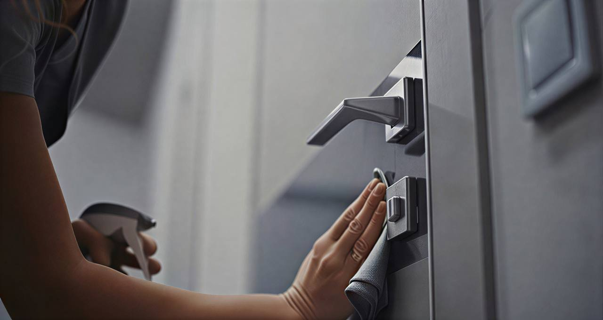

Deuren en poorten die opnieuw een nette indruk geven.
Voordeur, garagepoort of inkompartij vol vuil en aanslag? Wij maken alles weer proper tot in de randen en voegen.
Van voordeur tot industriële poort.
Voordeuren
Hout, aluminium of PVC. We verwijderen vuil, vlekken en aanslag zonder het oppervlak aan te tasten.
Binnendeuren
Gladde panelen, glaspartijen en klinken. Alles wordt proper afgewerkt.
Garagepoorten
Sectionaal, kantel of rol — we reinigen het volledige oppervlak en de geleiders.
Schuifpoorten
Rails, lamellen en frame. Vuil in de rail vertraagt de poort en slijt het mechanisme.
Draaipoorten
Scharnieren, frame en oppervlak. Alles wordt gereinigd en nagezien.
Beschermlaag
Na de reiniging brengen we een beschermende laag aan die vuil en vocht langer buiten houdt.
Stap voor stap, zonder verrassingen.
Materiaal, staat en type vervuiling worden bekeken zodat we de juiste producten kiezen.
Vuil kruipt in voegen, randen en hoeken. Daar beginnen we mee.
Het volledige oppervlak wordt grondig gereinigd met producten die passen bij het materiaal.
Beschermlaag aanbrengen, eindcontrole uitvoeren en werkplek opruimen.